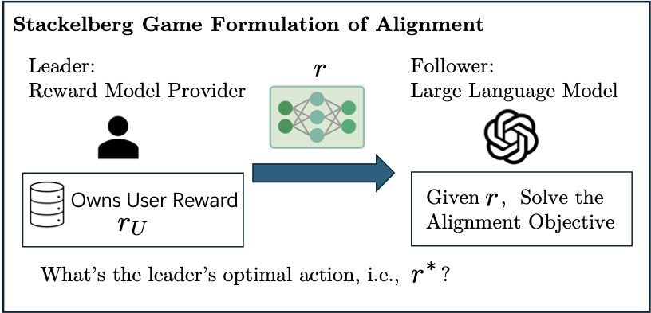

Inference Time Alignment
Introduction to Inference-Time Alignment
Inference-time alignment can be modeled as a token-level Markov Decision Process \(M = \{S, A, P, R\}\). Here, \(S\) is the state space, \(A\) is the action space, \(P\) is the transition rule, and \(R\) is the token-level reward.
For a prompt \(x\), the state at time \(t\) is the concatenation of the prompt and the tokens generated so far:
The action space \(A\) is the vocabulary \(V\), so choosing an action means selecting the next token. An LLM can therefore be viewed as a policy \(\pi\) that samples the next token according to
The full response \(y = (y_1, \ldots, y_T)\) has trajectory-level distribution
The transition is deterministic: once token \(y_t\) is generated, the next state is
The goal is to align a base policy \(\rho_{\mathrm{base}}\) to a token-level reward function. Since the reward model \(r : X \times Y \to \mathbb{R}\) scores complete responses, the token-level reward is nonzero only when an end-of-sentence token is reached:
The optimal state-action value, or Q-function, measures the best expected future reward from taking token \(y_t\) at state \(s_t\):
where \(s_{t+i} = [s_t, z_0, z_1, \ldots, z_{i-1}]\). Many inference-time alignment methods approximate the trajectory-level objective by solving a per-token decoding problem:
This objective has the closed-form solution
where \(C_{\beta}(s_t)\) is the normalizing partition function. The main challenge is that \(Q^*(s_t, y_t)\) is not directly available, so different inference-time alignment methods use different approximations to it.
Prior work therefore relies on various approximations. Khanov et al. (2024) replace \(Q^*(s_t, y_t)\) with \(r(s_t, y_t, \mathrm{EOS})\) when decoding on the fly. Mudgal et al. (2023) first generate an offline dataset using the base model, then train a neural network on that dataset to approximate \(Q^*(s_t, y_t)\) by training a value function that estimates \(\mathbb{E}_{\tilde y \sim \rho_{\mathrm{base}}}[r([s_t, y_t], \tilde y_{>t})]\). Mudgal et al. (2023) also propose an importance sampling method to estimate \(\mathbb{E}_{\tilde y \sim \rho_r}[r([s_t, y_t], \tilde y_{>t})]\), where \(\rho_r\) is the trajectory distribution induced by an LLM trained with reward function \(r\).
My Contribution
My paper studies reward shaping for inference-time alignment from a Stackelberg game perspective. The central claim is that directly using a reward model learned from user preference data can be suboptimal when the aligned language model is constrained to stay close to a base model through KL regularization. Instead, the reward model itself should be designed strategically.
First, consider the standard alignment pipeline. A reward model provider learns a user reward model \(r_U : X \times Y \to \mathbb{R}\) from preference data. This reward model is then passed directly to a downstream alignment process, which uses it to steer the language model toward responses with higher reward. Let \(x \in X\) be a prompt, \(y \in Y\) be a full response, and \(\rho_{\mathrm{base}}\) be the base LLM policy. The downstream alignment process solves
The KL term keeps the aligned model close to the base model, which helps preserve fluency and language competence. But it also means the base model still has influence over the final aligned policy. The closed-form solution makes this interaction explicit: the aligned policy weights base-model responses by an exponentiated reward term.
This creates a failure mode. Suppose a base model has a strong political bias. For a political prompt, imagine it assigns probability \(0.9\) to a left-leaning response \(y_1\) and probability \(0.1\) to a neutral response \(y_2\). A user prefers neutrality, so the user reward is \(r_U(x,y_1)=1\) and \(r_U(x,y_2)=2\). If the downstream alignment process directly uses \(r_U\), the KL-regularized policy still puts most probability on the left-leaning response: approximately \(0.77\) on \(y_1\) and \(0.23\) on \(y_2\). The user’s expected utility is only about \(1.23\).
But if the reward model provider instead gives the downstream alignment process a shaped reward, for example \(\tilde r(x,y_1)=0\) and \(\tilde r(x,y_2)=3\), then the aligned policy puts much more probability on the neutral response: approximately \(0.31\) on \(y_1\) and \(0.69\) on \(y_2\). The user’s expected utility rises to about \(1.69\). The point is not that rewards should always be exaggerated; the point is that the raw user reward is not always the best incentive signal once KL regularization and base-model bias are present.
This motivates the core question: how should the reward model be shaped? Too little shaping can leave the aligned model stuck near the base model’s bias. Too much shaping can cause reward hacking or degenerate outputs. My contribution is to formulate this tradeoff as a principal-agent problem.
My contribution is to view the reward model provider as the leader and the language model as the follower. The leader chooses the reward model, anticipating that the follower will best respond by solving the KL-regularized alignment problem. This principal-agent perspective turns reward design into an optimization problem: the principal should choose a reward model that induces the follower policy maximizing the user’s true utility.

Under this framework, my paper derives principal reward shaping: a reward-shaping rule that provably maximizes user utility under the alignment objective. Intuitively, the reward model provider should not always report the raw user utility \(r_U\). Instead, the provider may need to reshape incentives so that the LLM’s best response better matches the user’s desired distribution while staying within bounds that mitigate reward hacking.
References
- Wang, H., Lin, T., Kong, L., Li, C., Jiang, H., and Tambe, M. (2026). Reward Shaping for Inference-Time Alignment: A Stackelberg Game Perspective. arXiv preprint arXiv:2602.02572.
- Chakraborty, S., Ghosal, S. S., Yin, M., Manocha, D., Wang, M., Bedi, A. S., and Huang, F. (2024). Transfer Q-Star: Principled decoding for LLM alignment. Advances in Neural Information Processing Systems, 37:101725-101761.
- Khanov, M., Burapacheep, J., and Li, Y. (2024). ARGS: Alignment as reward-guided search. arXiv preprint arXiv:2402.01694.
- Mudgal, S., Lee, J., Ganapathy, H., Li, Y., Wang, T., Huang, Y., Chen, Z., Cheng, H.-T., Collins, M., Strohman, T., et al. (2023). Controlled decoding from language models. arXiv preprint arXiv:2310.17022.